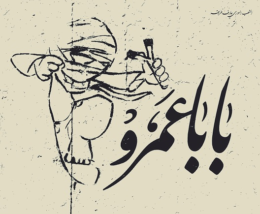
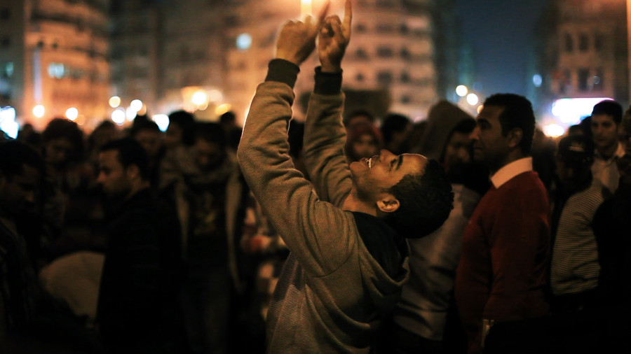

My Booklet Assignment
For this assignment we had to create a 16 page booklet that inculdes images and text.
I decided to make my booklet about the art and poetry of the Arab uprisings. I also discuss the aftermath and consquences of the revolution.
Photos from the Booklet
 My poster

For this assignment we had to create a full color poster/flyer in Adobe Illustrator. It should be letter-sized (8.5" x 11"), and include text, shapes, and at least one photo or bitmap image (only use content you have permission to use).